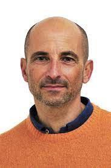

La Ronde de l'espoir
Le principe de la ronde de l'espoir est utiliser la bonne volonté de certains adultes pour encadrer la beauté de l'état d'esprit des jeunes avec lesquels on travaille, et tout ça afin de venir en aide à des enfants qui sont à l'hôpital.
Depuis 22 ans, le professeur de sport Jean-Christophe Darnatigues a initié la Ronde de l'Espoir. La première était dans un autre établissement. Avec l’aide de professeurs, curieux au début mais qui ont très rapidement aidé à tout mettre en place de nombreuse activités soontn mise en place dans le lycée de La Merci Littoral afin de récolter des fond pour des associations qui aident les enfants a l’hospital.

Édition 2017 !
Ce vendredi 31 mars 2017 a débuté la Ronde de l’Espoir de La Merci Littoral. A cette occasion le lycée a organisé de nombreuses activités en vue de récolter des fonds pour les enfants hospitalisés. Si l’objectif était de récolter un maximum d’argent, ce fût aussi l’occasion de nombreux moments de divertissement. Beaucoup d’activités ont été organisées telles que le concours de déguisement remporté par le terminales ES. L’IME La Cigale, une des associations pour laquelle les fonds ont été récoltés cette année, est venue avec des enfants handicapés. Ces derniers, malgré leur fauteuil roulant, ont échangé quelques passes et joué au foot avec les lycéens. Un vrai moment d’émotion apprécié par tous les élèves. La journée s’est terminée en beauté par la remise du chèque d’une valeur de 16.177€ et le spectacle des talents organisé et interprété par les élèves du lycée.
Animé par Jean-Christophe Darnatigues les élèves de notre lycée (tous niveaux confondus) se sont lancés pour 24H de sport dès le jeudi 30 mars à partir de 16h30. Leur but ? Battre le record du monde d’ergo. L’ambiance dès les premières minutes a été incroyable. Une vraie effervescence s’est créée dans le hall pour soutenir les équipes et les encourager. Les élèves participant au projet ont été d’une motivation sans égal et on a vu à quel point ce projet leur tenait à coeur. Toute la nuit les équipes se sont relayées sans que la roue de l’ergo ne s’arrête de tourner. Les heures ont défilé, les kilomètres aussi. Cette participation et cet engouement ont été à la hauteur des précédentes Ronde de l’Espoir comme celle qui a eu lieu il y a trois ans déjà. Même avec beaucoup de fatigue les équipes sont restées soudées et se sont entraidées. C’est grâce à toute cette effervescence que le projet mené par Jean-Christophe Darnatigues détient désormais le nouveau record du monde.